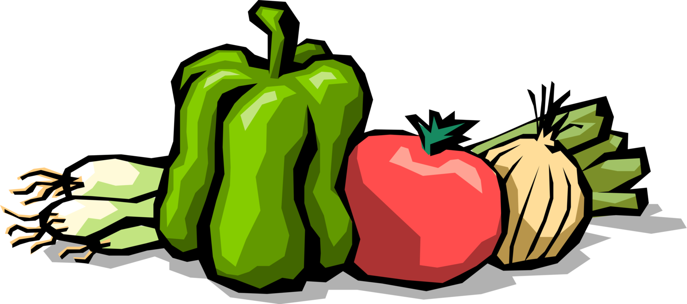

Our bodies have an incredible innate healing power that we often take for granted or completely fail to acknowledge. I had the wonderful opportunity to talk about how food, environment, and our lifestyle can be leveraged to pave the path for a future of personalized, preventative, and healing medicine
Second year studying Computer Science and Engineering at Ohio State Universities' College of Engineering. I plan on graduating in May of 2022 with a B.S in Computer Science.
Starting March 16, 2020, I will be enrolled in the Institute For Integrative Nutrition. This will further my education in nutrition, health coaching, and business! What it entails: Nutrition School, Online Nutrition School, Holistic Nutrition, Health Coach, Health Coach Training Program, Food Science, Food, Nutrition Degree, Yoga, Fitness, Meditation, and Personal development
I build modern websites with beautiful designs that are simple to navigate, responsive and SEO friendly.
I help people create meaningful and lasting lifestyle changes that improve their mindset, radically transform their health, and give them more time to pursue what matters most.

OSU Farmers Market 2019 will include local vendors, campus resources and giveaway items. The event is being spearheaded by Jacob Kenneally, a second-year in computer science and engineering and a member of the USG student affairs committee, in conjunction with the USG sustainability committee.
The MMC Scholars Program is a selective, living-learning program at Ohio
State that encourages a hands-on application of digital media and technology.
Students share a passion for learning new technologies and exploring how to
incorporate them in emerging careers.
I work with a team of 7 students to help plan, organize, budget, advertise, and promote various community and career building events for the entirety of the MMC Scholar's Program.

Data processing and analytics work for Dr. Zhu - Foods For Health Discovery Theme @ OSU